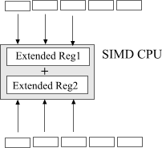

SSE2 optimization
Anatoliy Kuznetsov. 2003.
Introduction
Current x86 processors from Intel and AMD include support for additional set of single instruction multiple data (SIMD) commands. What is SIMD? It's a way of getting your CPU to do more work with less instructions. Ultimately it means the program code is becoming more compact and often works faster.
How SIMD works?
Imagine that you have two arrays and you need to add one to another element by element.Fig. 1. Adding arrays traditional way.
Simple as 1-2-3, isn't it? We are loading array elements one by one into the CPU registers and adding numbers. All arithmetic is contained in one loop.
The problem is that for every add operation inside the loop we one loop condition comparison. For long loops this one to one overhead must be eliminated. When we optimize this for performance the first thing we do is loop unrolling. Unrolling reduces loop overhead and boosts performance.
SIMD is designed to give us even better performance in vector operations.

Fig. 2. Vectorized operation.
In a SIMD enabled CPU we are equipped with extended, special purpose registers capable of loading several machine words and performing operations on all of them in parallel. For example SSE2 command set is capable of adding 4 32-bit or 8 16-bit machine words at once.
Optimization of bitwise operations using SSE2 integer arithmetic
SSE2 provides vector instructions for all bitwise operations like AND, OR, XOR or shifts. That makes it perfectly suitable for implementing bitsets. BM library uses compiler intrinsics to access SIMD functionality. Intrinsics give performance close to assemly language. Intel C++ or MS Visual C++ v.7.0 both support MMX/SSE/SSE2 extensions.
Here come small code fragment to AND two int-based bitsets.
void bit_operation_and(unsigned* dst, const unsigned* src, unsigned block_size)
{
const __m128i* wrd_ptr = (__m128i*)src;
const __m128i* wrd_end = (__m128i*)(src + block_size);
__m128i* dst_ptr = (__m128i*)dst;
do
{
__m128i xmm1 = _mm_load_si128(wrd_ptr);
__m128i xmm2 = _mm_load_si128(dst_ptr);
__m128i xmm1 = _mm_and_si128(xmm1, xmm2); // AND 4 32-bit words
_mm_store_si128(dst_ptr, xmm1);
++dst_ptr;
++wrd_ptr;
} while (wrd_ptr < wrd_end);
}
When writing this code two main assumptions were made:
Memory access optimization
Historically all x86 CPUs work well with misaligned data. Programs often does not care about alignment issues. The next code works well on any x86 but crashes on most RISC CPUs.
char* p = (char*) malloc(256);
int* p1 = (int*)(p+1); // Misaligned address
*p1 = 0; // Potential disaster !
When it comes to SSE Intel strongly suggests not neglecting alignment to get top performance. In SSE2 mode all bitwise block pointers must be 16-byte aligned to avoid crashes. BM library lets you to overload default memory allocator, but when doing this you need to bare in mind data alignment issue. C++ new operator does not provide 16-byte alignment guarantees so you need to use special environment specific functions.
SIMD enabled compilers usually provide functions for aligned memory allocation. For Intel C++ use the _mm_malloc/_mm_free intrinsics to allocate and free aligned blocks of memory. In MSVC v.7 _aligned_malloc/_aligned_free serves the same purpose. Don't make a mistake by calling general purposefree to deallocate pointer created by _mm_malloc. It will cause unpredictable behavior.
Bits counting
BitMagic library is optimized for 64-bit processors. As a part of optimization it implements parallel bitcounting algorithm. Here is implementation for 32-bit based integer.
unsigned BitCount32(unsigned b)
{
b = (b & 0x55555555) + (b >> 1 & 0x55555555);
b = (b & 0x33333333) + (b >> 2 & 0x33333333);
b = (b + (b >> 4)) & 0x0F0F0F0F;
b = b + (b >> 8);
b = (b + (b >> 16)) & 0x0000003F;
return b;
}
The algorithm is perfect for SSE2 vectorization.
Fig. 3.
On every step we are counting SSE quad word 4 bitcount sub results and accumulate it in XMM result variable. When the whole array is done all we need to do is to add all 4 sub results from the accumulator.
The best description here is certainly the code itself:
unsigned bit_count_sse2(__m128i* block, __m128i* block_end)
{
const unsigned mu1 = 0x55555555;
const unsigned mu2 = 0x33333333;
const unsigned mu3 = 0x0F0F0F0F;
const unsigned mu4 = 0x0000003F;
// Loading masks
__m128i m1 = _mm_set_epi32 (mu1, mu1, mu1, mu1);
__m128i m2 = _mm_set_epi32 (mu2, mu2, mu2, mu2);
__m128i m3 = _mm_set_epi32 (mu3, mu3, mu3, mu3);
__m128i m4 = _mm_set_epi32 (mu4, mu4, mu4, mu4);
__m128i mcnt;
mcnt = _mm_xor_si128(mcnt, mcnt); // cnt = 0
while (block < block_end)
{
__m128i tmp1, tmp2;
__m128i b = _mm_load_si128(block);
// b = (b & 0x55555555) + (b >> 1 & 0x55555555);
tmp1 = _mm_srli_epi32(b, 1); // tmp1 = (b >> 1 & 0x55555555)
tmp1 = _mm_and_si128(tmp1, m1);
tmp2 = _mm_and_si128(b, m1); // tmp2 = (b & 0x55555555)
b = _mm_add_epi32(tmp1, tmp2); // b = tmp1 + tmp2
// b = (b & 0x33333333) + (b >> 2 & 0x33333333);
tmp1 = _mm_srli_epi32(b, 2); // (b >> 2 & 0x33333333)
tmp1 = _mm_and_si128(tmp1, m2);
tmp2 = _mm_and_si128(b, m2); // (b & 0x33333333)
b = _mm_add_epi32(tmp1, tmp2); // b = tmp1 + tmp2
// b = (b + (b >> 4)) & 0x0F0F0F0F;
tmp1 = _mm_srli_epi32(b, 4); // tmp1 = b >> 4
b = _mm_add_epi32(b, tmp1); // b = b + (b >> 4)
b = _mm_and_si128(b, m3); // & 0x0F0F0F0F
// b = b + (b >> 8);
tmp1 = _mm_srli_epi32 (b, 8); // tmp1 = b >> 8
b = _mm_add_epi32(b, tmp1); // b = b + (b >> 8)
// b = (b + (b >> 16)) & 0x0000003F;
tmp1 = _mm_srli_epi32 (b, 16); // b >> 16
b = _mm_add_epi32(b, tmp1); // b + (b >> 16)
b = _mm_and_si128(b, m4); // (b >> 16) & 0x0000003F;
mcnt = _mm_add_epi32(mcnt, b); // mcnt += b
++block;
}
bm::id_t tcnt[4];
_mm_storeu_si128((__m128i*)tcnt, mcnt);
return tcnt[0] + tcnt[1] + tcnt[2] + tcnt[3];
}
Putting thing together
Now we optimized both logical operations and bitcounting routines the question to ask is how it affects the performance? The answer to this question largely depends on bandwidth of our memory subsystem. Here I intentionally avoid quoting any numbers, but experience says that in case of large bitsets (not fitting into the CPU cache) we may have no or little difference between optimized plain C version and tuned SSE2 code. Why? The high performance 2+ GHz CPU simply starves for the data. High performance double channel memory controllers has the potential to significantly improve the bandwidth situation.
Another way is to try to close the gap between memory access instructions and computations. The best example here is computing distances between two bit vectors. Lets take Hamming distance, which is the minimum number of bits that must be changed in order to convert one bit string into another.
This can be found by using XOR on corresponding bits or equivalently, by adding corresponding bits (base 2) without a carry. For example, in the two bit strings that follow:
A 0 1 0 0
B 1 1 0 1
A XOR B = 1 0 0 1
The Hamming distance between A and B is 2, the number of 1's in the XOR string.
The straight forward C++ code computing this distance usually looks like:
unsigned int hamming_distance(const bvector<>& a, const bvector<>& b)
{
bvector<> tmp(a);
tmp ^= b;
return tmp.count();
}
This code inevitably engages into alocation of memory(can be slow!), memory-memory transfer(slow!), XOR operation which results in fetching of two bitstring from memory into the CPU, little bit of processing and then saving results back to memory (slow!). After that we compute bitcount which is also a bandwidth limited operation. Provided that out bit strings are long and do not fit the CPU cache, performance of this distance function can be far from perfect. So as many HPC applications this one is bandwidth limited and all tuning should target bandwidth optimization.
Fortunately in this case the problem can be solved. It is quite clear that we really want is to kill the temporary. What we need to do is to write a function which will XOR two bitsets word by word and compute bitcount immediately. In this case we only every vectors once. It means our memory to CPU ratio improves and SSE2 starts making perfect sense.
Implementation details
To turn SSE2 optimization on you need to define BMSSE2OPT macro in your makefile or in(before) bm.h header. This option is not supposed to work together with BM64OPT.
Current revision of BM library is not trying to identify the target CPU on runtime and if SSE2 optimization is on, you will not be able to run the application on CPUs without SSE2 support (like AMD or Pentium III).
Intel suggests using _mm_empty() after a SIMD integer instruction block if the next instruction is an x87 FP instruction; for example, before doing calculations on floats, doubles or long doubles. BM library by default calls
_mm_empty to make sure other components of your program are safe. But if your program does not intermix FP arithmetic
with integer SSE2 or you want to control this parameter by yourself you can disable automatic emptying of x86 FP stack.
To disable stack reinitialization code define BM_SET_MMX_GUARD.
#define BMSSE2OPT #define BM_SET_MMX_GUARD #include "bm.h" ....
References
[1] Intel Corporation. Intel® Pentium® 4 and Intel® Xeon™ Processor Optimization
[2] Intel Corporation. Intel Developer Web Site. http://developer.intel.com
Acknowledgements
MMX, SSE, SSE2, Pentium 4 are all registered trademarks of Intel Corporation.